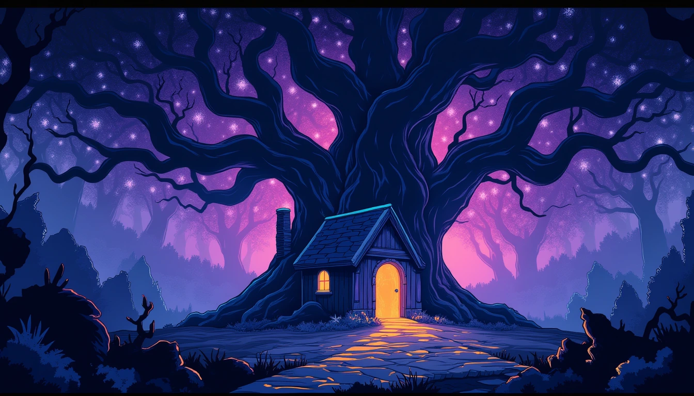
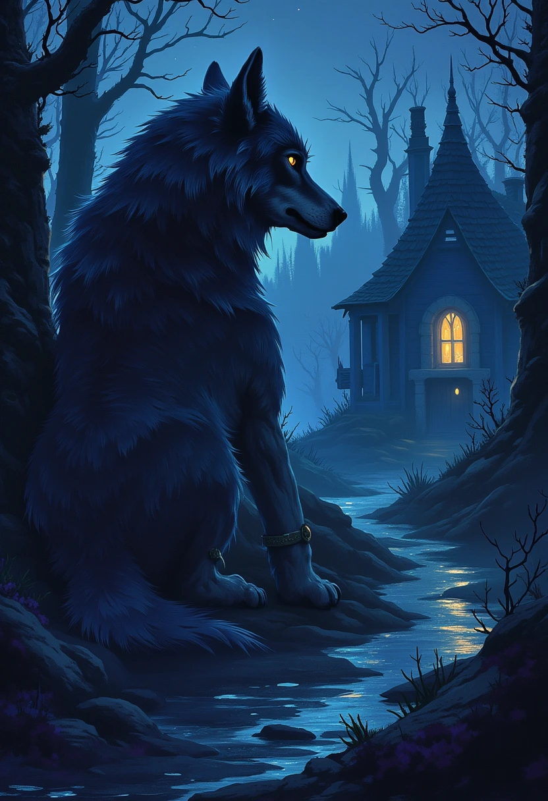
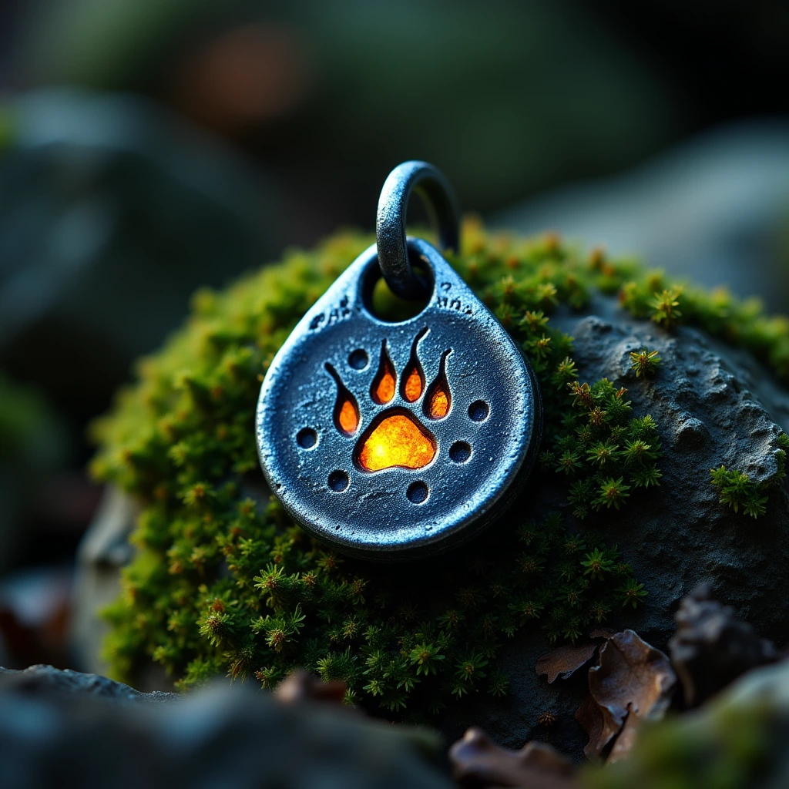

01 / SIX WORLD PACKS
Lonely Forest
Mirquo · dark storybook forest

Prompt & source
immanencer/mirquo
MRQ. Ancient living oak with a huge spreading crown above a tiny worn blue cottage, amber round window and slate roof. Nightfall, dark indigo forest, mossy roots, damp stone path. One oval opening among the branches reveals a violet star sky containing another tiny oak and warm cottage. Whimsical painted fantasy storybook, rich bark texture, readable shapes, honey light, moss, indigo and small mint glints. Wide empty landscape. No text, letters, signatures, logos, watermark, border or people.

Prompt & source
immanencer/mirquo
MRQ. Skull, a large living charcoal-grey wolf with a silver muzzle, deep chest, heavy tail and quiet attentive amber eyes. Exactly one wolf rests on four grounded paws beside a blue cottage at dusk, full body and complete tail visible, generous edge padding. Natural wolf anatomy, patient watchful personality. Painted fantasy storybook, expressive restrained animal face, finely painted fur, warm amber window light against indigo and moss. No text, letters, signature, watermark, clothes, skull mask or human anatomy.

Prompt & source
immanencer/mirquo
MRQ. One small cool iron charm engraved with a single careful wolf pawprint, a simple loop for a bracelet cord. Clear complete object centered on a mossy stone, generous padding, soft forest dusk backdrop. Painted fantasy storybook, tactile dark iron, fine worn edges, warm amber glint against indigo and moss. Object-only still life. No text, letters, signature, watermark, characters, animals or extra objects.
Art proposal · awaiting your review